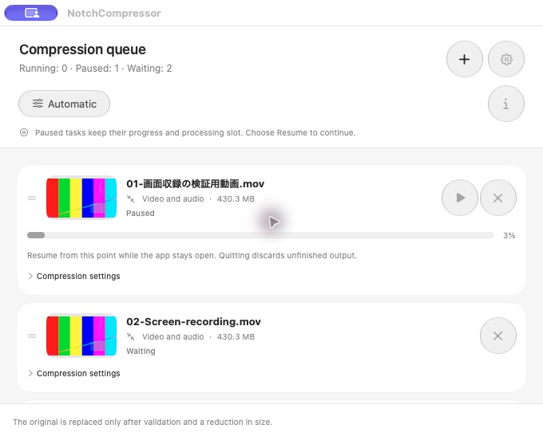

動画をノッチへ。
画面内のサンプル動画をノッチへ運んでください。左は画質、中央は画質と音質、右は音質を圧縮します。タップして選ぶこともできます。
画面収録を、ノッチから小さく。
動画を画面の上へ運んで、圧縮する部分を選べます。
正式版の紹介を先行公開しています。以下の機能説明・デモは開発中の0.1.0が対象です。現在ダウンロードできるalpha.2は日本語UIの試験版で、一部の動作が異なります。
公開中の試験版を見るApple Silicon · macOS 14以降
ソースコード ↗画面内のサンプル動画をノッチへ運んでください。左は画質、中央は画質と音質、右は音質を圧縮します。タップして選ぶこともできます。
ドロップして圧縮・容量削減と検証に成功した場合に置き換え
アプリを開いたままなら、途中から再開できます。
標準 · 映像 HEVC · 音声 AAC
ローカルのMOV・MP4・M4Vをまとめてドロップ。映像はSDR・8bit・不透明、音声はモノラル／ステレオに対応します。画像・音声ファイル単体・PDFにはまだ対応していません。
追加ツールのインストールは不要。Macのハードウェアを使って、映像をHEVC、音声をAACに変換します。
キューを閉じても処理を継続。通知を有効にすると、完了時の容量差や失敗を知らせます。処理中は自動スリープを抑止し、画面は消灯できます。
macOSのアプリごとの言語設定に対応し、再起動後に反映します。日英のDMGは案内だけが異なり、同じアプリが入っています。
品質優先・標準・容量優先から選択。カスタムでは、映像のビットレート割合と音声のビットレートを指定できます。画質と容量の変化は動画によって異なります。
出力全体を検証し、容量が減った場合だけ、元動画を同じ名前・場所で置き換えます。失敗・キャンセル・削減なしなら元動画を保持します。再圧縮は非可逆なので、必要な原本は別に保存してください。
手動スリープ中は処理を一時停止し、復帰後に再開します。自分で停止したタスクは停止したまま。アプリ終了やMac再起動後は、途中からではなく最初から再試行します。
DMGを開いてApplicationsへドラッグし、アプリケーションフォルダから起動。アプリとDMGはDeveloper ID署名・Apple公証済みです。更新はアプリ内から確認できます。
alpha.1からは手動で更新してください。alpha.2で更新時に終了しない場合は、設定を閉じてメニューからアプリを終了すると更新が完了します。
ファイル名や左のハンドルをドラッグして、待ち順を変更。実行中の動画は先頭に固定されます。

変更点と配布中のDMGを確認できます。
リリース履歴を見る ↗困ったことや、欲しい機能を教えてください。
GitHub Issuesで報告する ↗NotchCompressorを作っているManiのアカウントです。